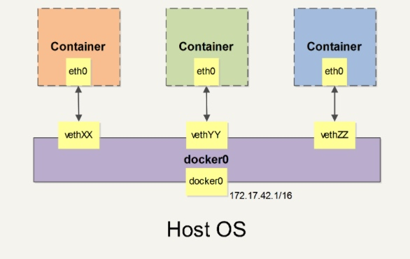

使用网络
外部访问容器
容器中可以运行一些网络应用，要让外部也可以访问这些应用，可以通过 -P 或 -p 参数来指定端口映射。
当使用 -P 标记时，Docker 会随机映射一个 49000~49900 的端口到内部容器开放的网络端口。
使用 docker container ls 可以看到，本地主机的 49155 被映射到了容器的 5000 端口。此时访问本机的 49155 端口即可访问容器内 web 应用提供的界面。
1 | [root@dockerfiledev ~]# docker run -d -P training/webapp python app.py |
映射所有接口地址
使用 hostPort:containerPort 格式本地的 5000 端口映射到容器的 5000 端口，可以执行
1 | [root@dockerfiledev ~] |
映射到指定地址的指定端口
可以使用 ip:hostPort:containerPort 格式指定映射使用一个特定地址，比如 localhost 地址 127.0.0.1
1 | [root@dockerfiledev ~]#docker run -d -p 127.0.0.1:5000:5000 training/webapp python app.py |
查看映射端口配置
使用 docker port 来查看当前映射的端口配置，也可以查看到绑定的地址
1 | [root@dockerfiledev ~]# docker port inspiring_jang 5000 |
注意：
-
容器有自己的内部网络和 ip 地址（使用 docker inspect 可以获取所有的变量，Docker 还可以有一个可变的网络配置。）
-
-p 标记可以多次使用来绑定多个端口
1 | [root@dockerfiledev ~]# docker run -d \ |
容器互联
新建网络
下面先创建一个新的Docker网络。
1 | [root@dockerfiledev ~]# docker network create -d bridge my-net |
连接容器
运行一个容器并连接到新建的my-net网络
1 | [root@dockerfiledev ~]# docker network create -d bridge my-net |
再运行一个容器并加入到 my-net 网络
1 | [root@dockerfiledev ~]# docker run -it --rm --name busybox2 --network my-net busybox sh |
再查看容器信息
1 | [root@dockerfiledev ~]# docker container ls |
下面通过 ping 来证明 busybox1 容器和 busybox2 容器建立了互联关系
1 | 在 busybox1 容器输入以下命令 |
配置 DNS
如何自定义配置容器的主机名和 DNS 呢？秘诀就是 Docker 利用虚拟文件来挂载容器的 3 个相关配置文件。
在容器中使用 mount 命令可以看到挂载信息：
1 | / # mount |
这种机制可以让宿主主机 DNS 信息发生更新后，所有 Docker 容器的 DNS 配置通过 /etc/resolv.conf 文件立刻得到更新。
配置全部容器的 DNS ，也可以在 /etc/docker/daemon.json 文件中增加以下内容来设置。
1 | { |
这样每次启动的容器 DNS 自动配置为 114.114.114.114 和 8.8.8.8。使用以下命令来证明其已经生效。
1 | docker run -it --rm ubuntu:17.10 cat etc/resolv.conf |
如果用户想要手动指定容器的配置，可以在使用 docker run 命令启动容器时加入如下参数：
-h HOSTNAME 或者 --hostname=HOSTNAME 设定容器的主机名，它会被写到容器内的 /etc/hostname 和 /etc/hosts。但它在容器外部看不到，既不会在 docker ps 中显示，也不会在其他的容器的 /etc/hosts 看到。
–dns=IP_ADDRESS 添加 DNS 服务器到容器的 /etc/resolv.conf 中，让容器用这个服务器来解析所有不在 /etc/hosts 中的主机名。
–dns-search=DOMAIN 设定容器的搜索域，当设定搜索域为 .example.com 时，在搜索一个名为 host 的主机时，DNS 不仅搜索 host，还会搜索 host.example.com。
注意：如果在容器启动时没有指定最后两个参数，Docker 会默认用主机上的 /etc/resolv.conf 来配置容器。
高级网络配置
当 Docker 启动时，会自动在主机上创建一个 docker0 虚拟网桥，实际上是 Linux 的一个 bridge，可以理解为一个软件交换机。它会在挂载到它的网口之间进行转发。
同时，Docker 随机分配一个本地未占用的私有网段（在 RFC1918 中定义）中的一个地址给 docker0 接口。比如典型的 172.17.42.1，掩码为 255.255.0.0。此后启动的容器内的网口也会自动分配一个同一网段（172.17.0.0/16）的地址。
当创建一个 Docker 容器的时候，同时会创建了一对 veth pair 接口（当数据包发送到一个接口时，另外一个接口也可以收到相同的数据包）。这对接口一端在容器内，即 eth0；另一端在本地并被挂载到 docker0 网桥，名称以 veth 开头（例如 vethAQI2QT）。通过这种方式，主机可以跟容器通信，容器之间也可以相互通信。Docker 就创建了在主机和所有容器之间一个虚拟共享网络。

Docker 网络相关的命令列
- -b BRIDGE 或 --bridge=BRIDGE 指定容器挂载的网桥
- –bip=CIDR 定制 docker0 的掩码
- -H SOCKET… 或 --host=SOCKET… Docker 服务端接收命令的通道
- –icc=true|false 是否支持容器之间进行通信
- –ip-forward=true|false 请看下文容器之间的通信
- –iptables=true|false 是否允许 Docker 添加 iptables 规则
- –mtu=BYTES 容器网络中的 MTU
下面2个命令选项既可以在启动服务时指定，也可以在启动容器时指定。在 Docker 服务启动的时候指定则会成为默认值，后面执行 docker run 时可以覆盖设置的默认值。
- –dns=IP_ADDRESS… 使用指定的DNS服务器
- –dns-search=DOMAIN… 指定DNS搜索域
最后这些选项只有在 docker run 执行时使用，因为它是针对容器的特性内容。
- -h HOSTNAME 或 --hostname=HOSTNAME 配置容器主机名
- –link=CONTAINER_NAME:ALIAS 添加到另一个容器的连接
- –net=bridge|none|container:NAME_or_ID|host 配置容器的桥接模式
- -p SPEC 或 --publish=SPEC 映射容器端口到宿主主机
- -P or --publish-all=true|false 映射容器所有端口到宿主主机
容器访问控制
容器的访问控制，主要通过Linux的iptables 防火墙来进行管理和实现，iptables是linux上默认的防火墙软件；
容器访问外部网络
容器要想访问外部网络，需要本地系统的转发支持。在Linux 系统中，检查转发是否打开。
1 | [root@dockerfiledev ~] |
如果在启动 Docker 服务的时候设定 --ip-forward=true, Docker 就会自动设定系统的 ip_forward 参数为 1。
配置 docker0 网桥
Docker 服务默认会创建一个 docker0 网桥（其上有一个 docker0 内部接口），它在内核层连通了其他的物理或虚拟网卡，这就将所有容器和本地主机都放到同一个物理网络
Docker 默认指定了 docker0 接口 的 IP 地址和子网掩码，让主机和容器之间可以通过网桥相互通信，它还给出了 MTU（接口允许接收的最大传输单元），通常是 1500 Bytes，或宿主主机网络路由上支持的默认值。这些值都可以在服务启动的时候进行配置。
- –bip=CIDR IP 地址加掩码格式，例如 192.168.1.5/24
- –mtu=BYTES 覆盖默认的 Docker mtu 配置
也可以在配置文件中配置 DOCKER_OPTS，然后重启服务。
由于目前 Docker 网桥是 Linux 网桥，用户可以使用 brctl show 来查看网桥和端口连接信息。
1 | [root@dockerfiledev ~]#sudo brctl show |
- 注：brctl 命令在 Debian、Ubuntu 中可以使用 sudo apt-get install bridge-utils 来安装。
每次创建一个新容器的时候，Docker 从可用的地址段中选择一个空闲的 IP 地址分配给容器的 eth0 端口。使用本地主机上 docker0 接口的 IP 作为所有容器的默认网关
1 | [root@dockerfiledev ~]#sudo docker run -i -t --rm base /bin/bash |
自定义网桥
除了默认的 docker0 网桥，用户也可以指定网桥来连接各个容器。
在启动 Docker 服务的时候，使用 -b BRIDGE或–bridge=BRIDGE 来指定使用的网桥。
如果服务已经运行，那需要先停止服务，并删除旧的网桥。
1 | [root@dockerfiledev ~]# sudo systemctl stop docker |
然后创建一个网桥 bridge0
1 | [root@dockerfiledev ~]# sudo brctl addbr bridge0 |
查看确认网桥创建并启动。
1 | [root@dockerfiledev ~]# ip addr show bridge0 |
在 Docker 配置文件 /etc/docker/daemon.json 中添加如下内容，即可将 Docker 默认桥接到创建的网桥上。
1 | { |
启动 Docker 服务。
新建一个容器，可以看到它已经桥接到了 bridge0 上。
可以继续用 brctl show 命令查看桥接的信息。另外，在容器中可以使用 ip addr 和 ip route 命令来查看 IP 地址配置和路由信息。